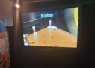
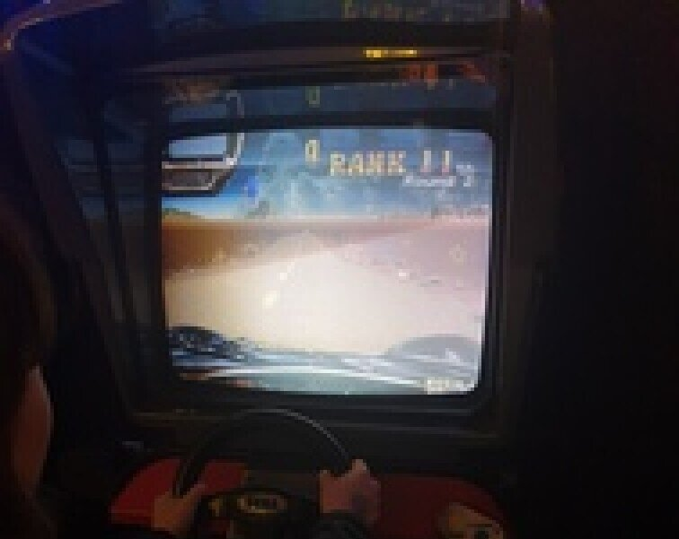

A garage in The Hague is where the adventure started in 2008 with two friends Hasan Tasdemir and Pascal Rappailles. Soon the garage became too small and they moved to a warehouse on an industrial estate. Unfortunately, the barn is unheated and everything had to be moved to the empty Ministry of Agriculture in the middle of winter. When the building also had to be cleaned, a then-current collection of 10 arcade video games along with some spare parts was stored in an old vintage car showroom. Because there's no place to decorate and there's no place to stuff the closets, I found a suitable place.



